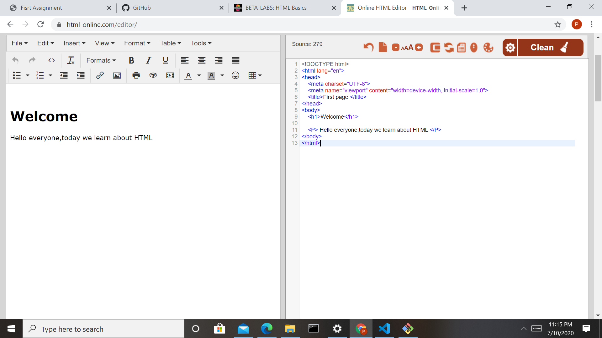
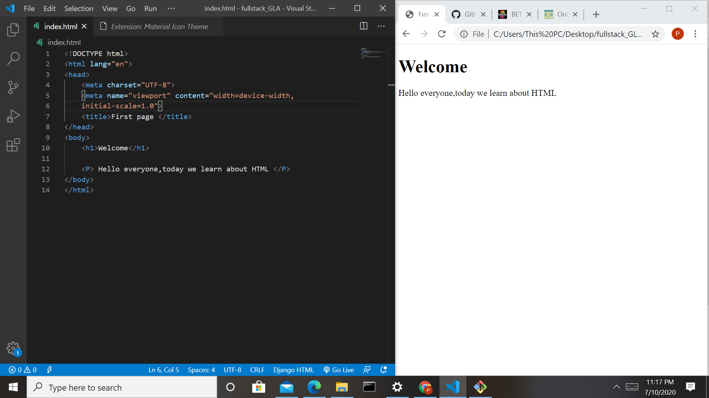

Front-end web development is everything involved in programming the user interface of a web application.Typically it refers to the Hypertext Markup Language(HTML),Cascading Style Sheets(CSS) and JavaScript portion of web simple page of HTML text to creating complex,responsive HTML5 websites designed to be accessed via various different browsers,devices and screen sizes.

